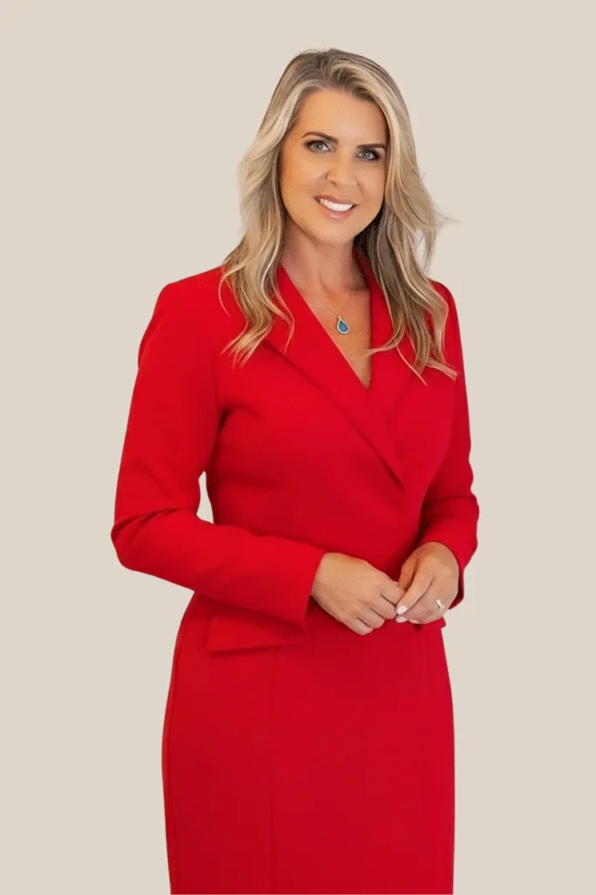

Na liderança da ASAS FAMILIAR está Nilton Belsarena, Diretor Presidente, um profissional cuja trajetória é marcada pela inovação, coragem e compromisso social. Nascido no Saladeiro, Quaraí-RS, iniciou sua vida no futebol, mas foi a carreira acadêmica que o direcionou ao empreendedorismo. Formado em Jornalismo, Administração de Empresas e Corretor de Seguros Profissional, construiu uma trajetória sólida em diferentes áreas.
Em 1994, criou o projeto "Empréstimo Consignado em folha de pagamento via sistema bancário", implementado pelo Banrisul em 1996, que revolucionou o mercado financeiro brasileiro e se tornou um dos maiores negócios do mundo. Por essa conquista, recebeu a Medalha do Mérito Farroupilha, além do Título de Cidadão de Porto Alegre.
Comunicador de impacto, apresentador de TV, diretor e jornalista, tem como marca registrada a criatividade e o cuidado humanizado. Com mais de 30 anos de experiência liderando projetos, equipes e iniciativas sociais, Nilton Belsarena construiu uma carreira voltada para o impacto humano, sempre focado em oferecer soluções que promovem dignidade, acolhimento e bem-estar às pessoas que atende. Hoje, lidera a ASAS FAMILIAR com dedicação e visão, promovendo acolhimento, dignidade e apoio integral às famílias.

Com uma trajetória dedicada ao cuidado integral do ser humano, Camila Fonseca, nossa Diretora Administrativa, é uma liderança feminina inspiradora na ASAS FAMILIAR.
Camila traz uma base sólida, sendo formada em Administração, com MBA em Gestão de Negócios e Pessoas e Pós-Graduação em Práticas Integrativas de Cuidados com a Saúde. Seu conhecimento é ampliado por especializações como Mestre Reiki e Consteladora Familiar, evidenciando sua visão holística e seu compromisso com a saúde integral.
Com mais de 30 anos de experiência corporativa em gestão de pessoas, sua abordagem na ASAS FAMILIAR une conhecimento técnico, gestão responsável e sensibilidade humana. Camila é guiada pela missão de despertar o potencial e promover o equilíbrio em cada indivíduo, oferecendo às famílias um apoio que vai além do convencional.
Há 4 anos, atua também como Terapeuta Integrativa, acompanhando de perto as dores de seus clientes e pacientes. Sua prática é marcada pela escuta ativa, empatia profunda e uma notável habilidade em transformar desafios em caminhos de transformação e fortalecimento.
Dentro da ASAS FAMILIAR ela representa o compromisso inegociável com a humanização, a empatia e o acolhimento emocional. Estes são pilares essenciais para transformar momentos delicados em experiências de serenidade e fortalecimento.
Sua presença e liderança reafirmam a visão da ASAS FAMILIAR de integrar cuidado espiritual, emocional, humano e administrativo em cada serviço que prestamos, garantindo que a excelência da gestão caminhe lado a lado com a profundidade do acolhimento.